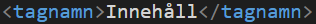
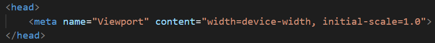

HTML är standard språket för webbsidor. Element är det som bygger upp HTML och representeras med sidopilar.
Element är kod i HTML som har en start tag, innehåll och en slut tag. En slut tag markeras med ett / (snedstreck)
class används för att specificera element i HTML så man kan till exempel göra ramar runt en text eller knappar.
id används för att ge ett element en unik specefikation. Ifall man redan har samma klass för ett antal element så kan man ge var och en ett specifikt id. På så sätt så kan man ändra det elementet individuellt utan att påverka de andra med samma klass.
meta tags ger information om sidan till sökmotorn som kallas för metadata. Denna informationen visas inte på sidan och kan bara läsas av sökmotorer. Tagen läggs typ alltid inom head elementet.
Responsiva sidor gör så att sidor kan bli anpassade efter skärm. Till exempel så har mobiler en mindre skärm och den är stående så det kan vara bra att få sidor anpassade efter hur skärmen är så att sidan alltid ser bra ut. För att göra sidor skärmanpassade så behöver man använda sig av en meta tag och skriva in viewport samt hur skärmen ska anpassa sig
http står för "Hypertext Transfer Protocol" och används för att överföra sidor på internet.
https står för "Hypertext Transfer Protocol Secure" och är en förlängning på http. https är till för att kryptera transport av data så att ingen ska kunna se vad man skickar över till sidan. Detta används primärt för banköverföringar eller annat som kräver att användaren behöver ange känslig information.
Compressed data är att man har modifierat data på ett sätt så att det tar mindre diskutrymme, alltså att man har tryckt ihop information så att det blir mer packat men tar mindre utrymme.
CDN står för "Content Delivery Network" och består av servrar som är utspridda i världen så att ifall en användare behöver ladda ner/hämta något från en server så kopplas användaren upp på den närmaste servern relativ till där användaren befinner sig.
local bootstrap är bootstrap fast nerladdad på din dator
JQuery är ett Javasscript biblotek som är till för att göra det enklare att använda sig av Javasscript på sin hemsida
Flexbox är en förkortning på Flexible box Layout och gör det enklare att designa responsiva layouts utan att behöva använda sig av float eller position
Grid används oftast för att göra rutnäts layouts så som rader och kolumer. Detta gör så att det blir enklare att designa sidor utan att behöva använda float eller position